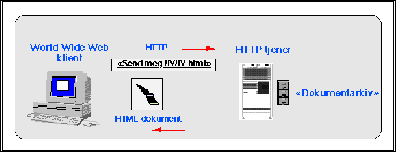

3 HTTP protokollen


Neste: 3.1 HTTP request
Opp: Introduksjon til World Wide
Forrige: WWW: Introduksjon av
HyperText Transfer Protocol er en tilstandsløs og objekt-orientert
protokoll for å utveksle vilkårlige typer data i en klient/tjener
omgivelse. Protokollen ble laget spesielt for World Wide Web, men
kan brukes til flere ting.
- TCP
Protokollen bruker TCP (se figur 1) som transport, men kan bruke en vilkårlig
datagram- eller streamorientert transportmekanisme.
- Format forhandling
En spesiell egenskap ved protokollen, er muligheten for forhandling
mellom klient og tjener når det gjelder hva slags dataformater og
datatyper partene betjener (denne egenskapen er bare delvis
utnyttet i dagens WWW programvare).
- MIME
HTTP bruker MIME
for å kode og angi datatypene som utveksles mellom WWW klienten og
WWW tjeneren (HTTP tjeneren). MIME står for Multipurpose Internet Mail
Extensions, og er først og fremst kjent som en mekanisme for å kunne
sende vilkårlige datatyper over en vanlig SMTP mail transportmekanisme, men kan brukes som en generell
mekanisme for å representere data innenfor mange omgivelser.
Figur 2 viser en tenkt HTTP sesjon mellom en WWW klient og
en HTTP tjener. Figuren finnes også i full størrelse her.

Figur 2: HTTP protokollen
Det er ikke dette kursets mål å gjøre en full gjennomgang av
HTTP protokollen og mulighetene som ligger i den, så vi skal
bare raskt se på de viktigste protokollmeldingene og hva slags
type informasjon som kan utveksles mellom klient og tjener.
Til slutt i dette avsnittet finnes noen henvisninger til annen
online informasjon om HTTP.
© Oslonett AS 15/05-95, 11:16:50
{kind=link}